Semaine 1 : le grand départ
Le décollage
Le 27 juin, 10h, aéroport de Nantes. Direction Amsterdam avec Thibault pour notre escale, avant de décoller à 15h20 vers Montréal avec KLM.
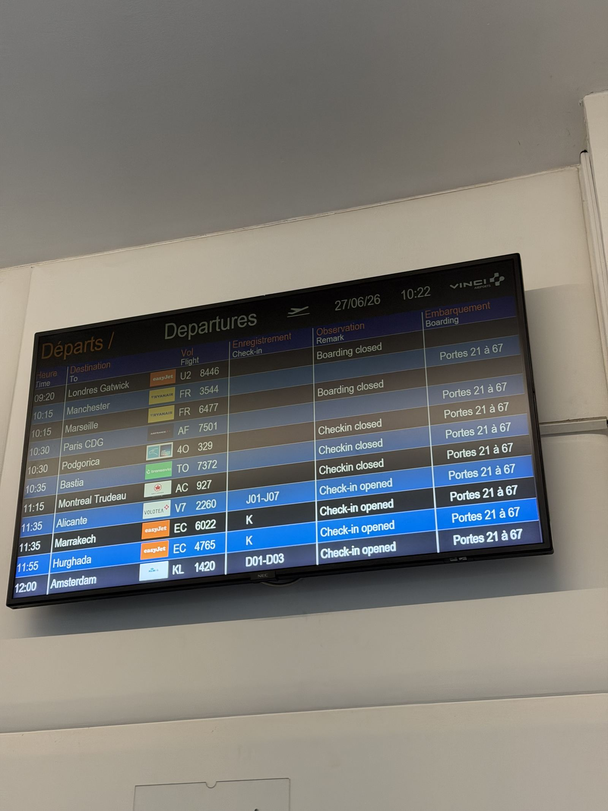

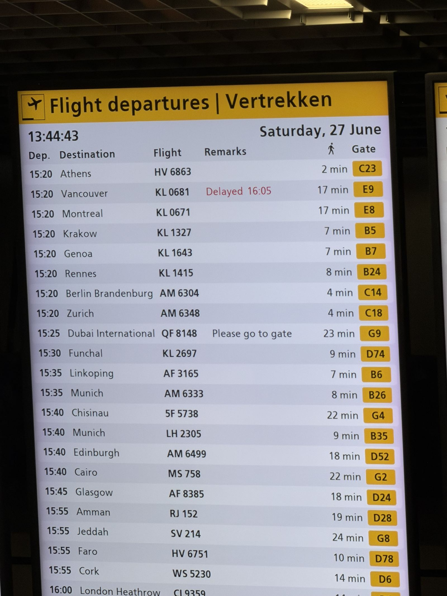
Première petite galère à l'arrivée : à cause d'un problème de communication entre la compagnie et l'aéroport, on a dû patienter une heure dans l'avion en attendant qu'un bus vienne nous débarquer sur le tarmac. Rien de grave, mais ça calme.
Passage par la douane et l'immigration, où j'ai récupéré la fiche visiteur — le document le plus important pour entrer au Canada en tant que stagiaire qui n'a pas besoin de permis de travail. Atterrissage à 16h30, montée dans le taxi à 19h10, direction notre hôtel à Montréal avec Thibault, où l'on a retrouvé Victor, Thomas et Killian.
Premiers pas à Montréal
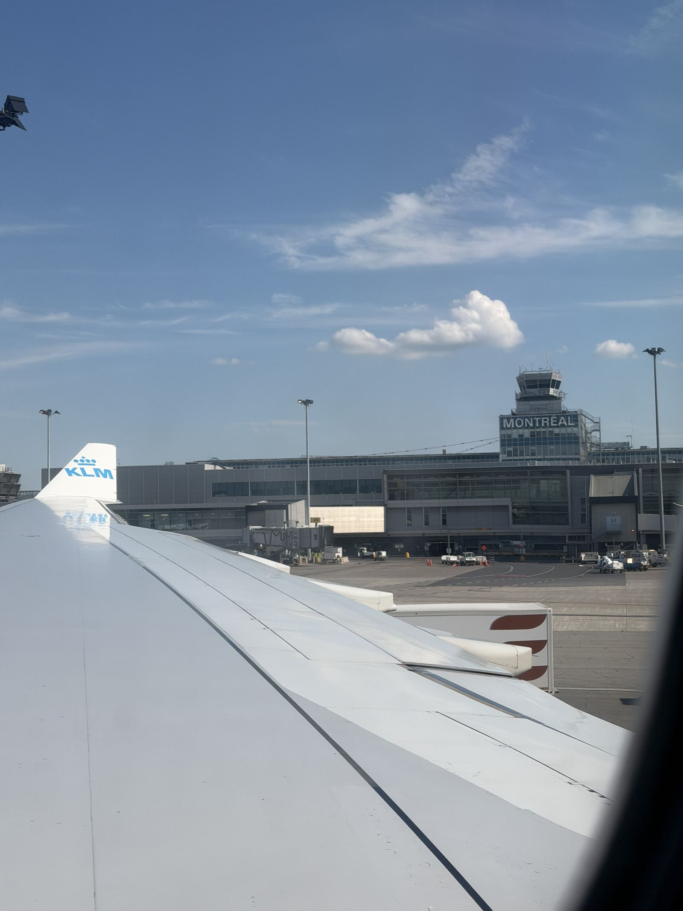

Le soir même, direction un resto de burgers pour reprendre des forces, tout en découvrant la ville. Le lendemain, on a continué la visite jusqu'à 16h30, avant de prendre un bus pour Sherbrooke où nous attendait notre logement.

Direction Sherbrooke
Notre logement pour cinq n'étant disponible qu'à partir du 1er juillet, les propriétaires ont eu la gentillesse de nous loger gratuitement du 28 juin au 1er juillet dans un appartement de trois chambres. Un vrai coup de pouce pour bien démarrer.

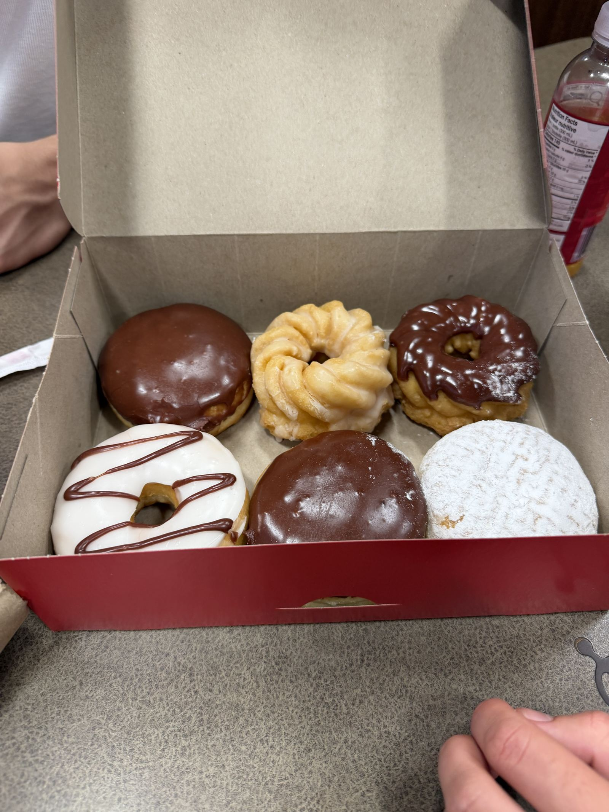
Premier passage sur le campus
Direction le campus de l'Université de Sherbrooke pour la visite officielle : présentation des lieux, tour de la paperasse administrative, et surtout la création de ma carte étudiante. Une matinée assez classique de rentrée, mais en version « premier jour dans un pays qu'on ne connaît pas ».
Première réunion en visio avec Rathush, mon tuteur de stage, pour poser officiellement le cadre de mes missions sur le projet HyphTech Inc. (voir l'article précédent pour le détail des cinq missions). On cale les priorités et la manière de travailler ensemble pour la suite.
Les deux premières semaines sont surtout consacrées à de la prise en main : recherche et veille sur le matériel industriel utilisé pour la régulation de température, d'humidité et de pression (presse chaude, chambre de séchage, machine Instron), et découverte de l'écosystème Shopify en vue de la future plateforme B2B/B2C. Pas encore de grosses réalisations concrètes à ce stade, mais une bonne partie du travail utile qui se fait en amont, avant de rentrer dans le vif du sujet — la suite au prochain article.
Petit à-côté culturel de la semaine : un soir, on a suivi un match de l'équipe de France, mais depuis notre appartement de Sherbrooke — rien à voir avec l'ambiance qu'on aurait pu imaginer. On était les seuls à regarder, aucune animation de rue, pas de bar bondé : un match de Coupe du Monde très tranquille, en pleine semaine, entre colocataires.

Le choc des courses
Une fois installés dans notre appartement définitif le 1er juillet, direction le supermarché pour faire les premières courses — et première vraie claque culturelle : les prix des produits « à la française » sont nettement plus élevés qu'en France, et honnêtement, le reste ne donne pas franchement envie au premier coup d'œil. Un classique du choc culturel alimentaire qu'on nous avait prévenu, mais qu'il faut vivre pour vraiment comprendre.

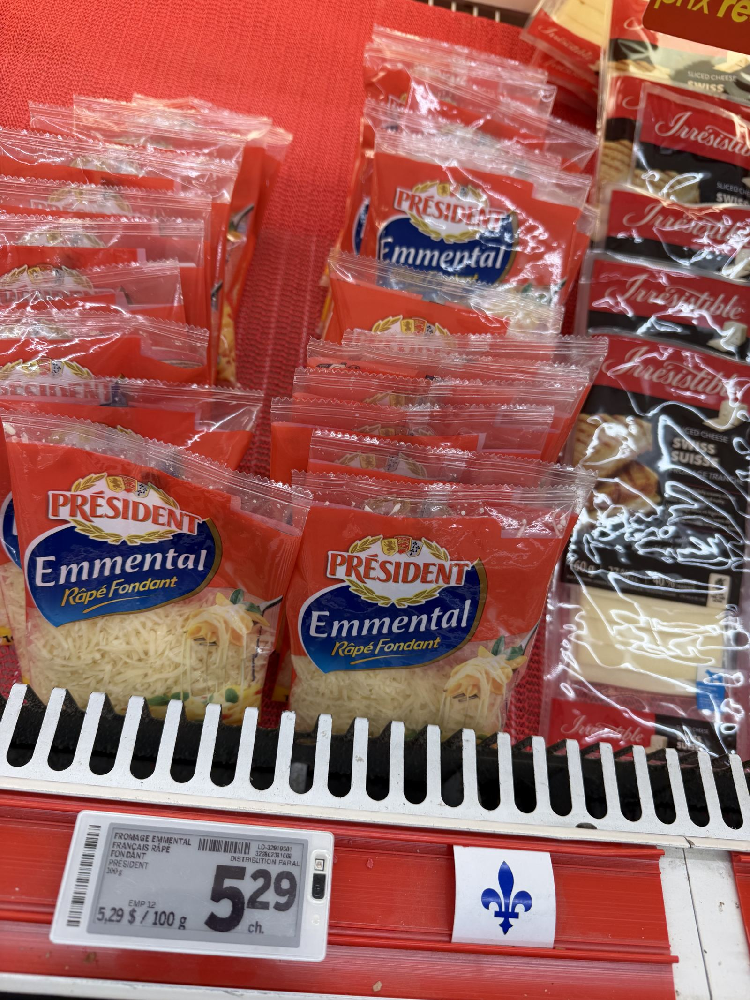
Le week-end : road trip vers Québec
Pour clore cette première semaine, on a loué une voiture avec Victor, Thomas et Killian pour partir à la découverte de la région le week-end du 4-5 juillet. Direction Trois-Rivières en première étape, puis Québec, où on a visité la vieille ville et goûté à la fameuse tire d'érable sur neige (« la sucette à l'érable ») — un incontournable qui vaut le détour.
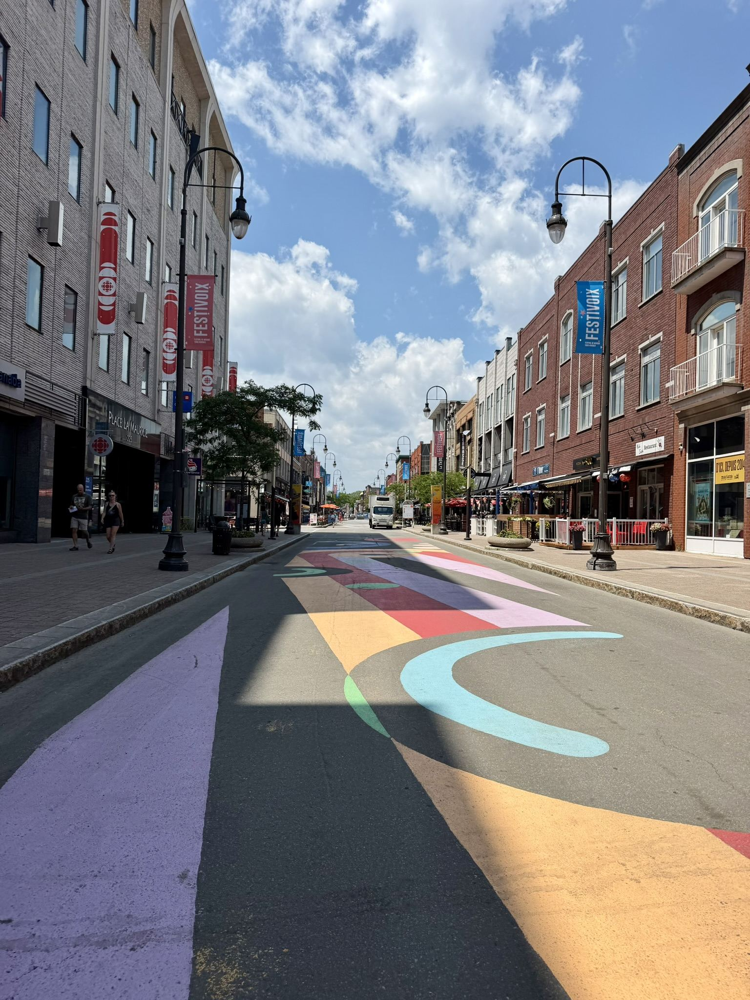
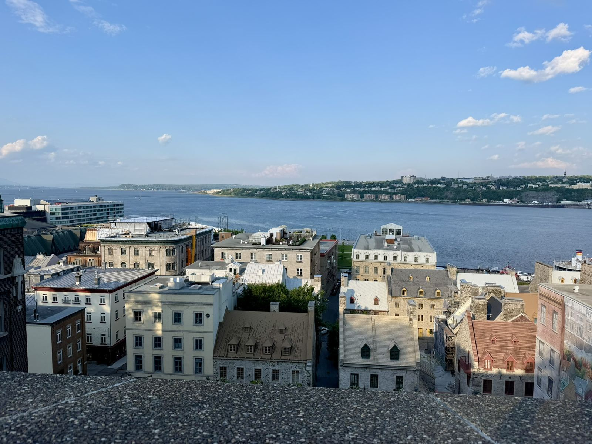
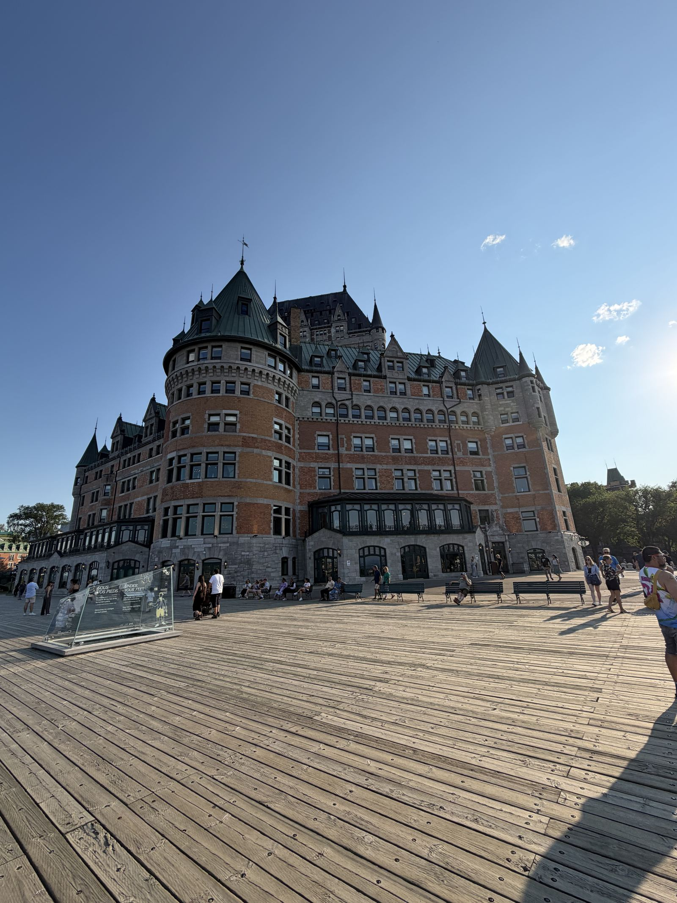
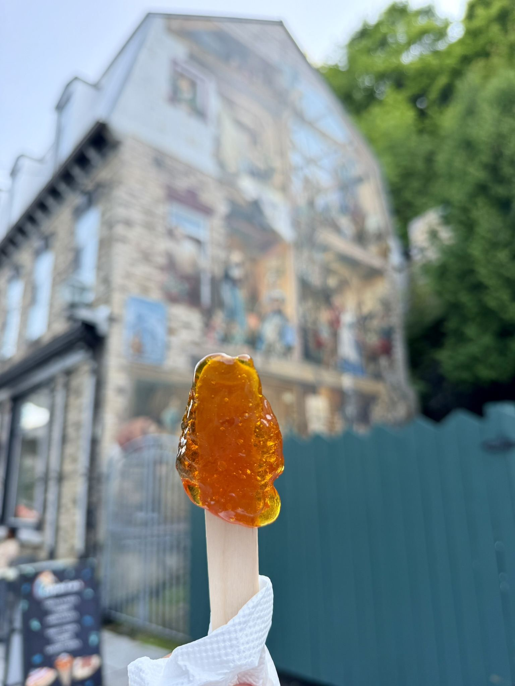
Ensuite direction les chutes : les chutes de la Chaudière puis les impressionnantes chutes Montmorency, plus hautes que celles du Niagara.
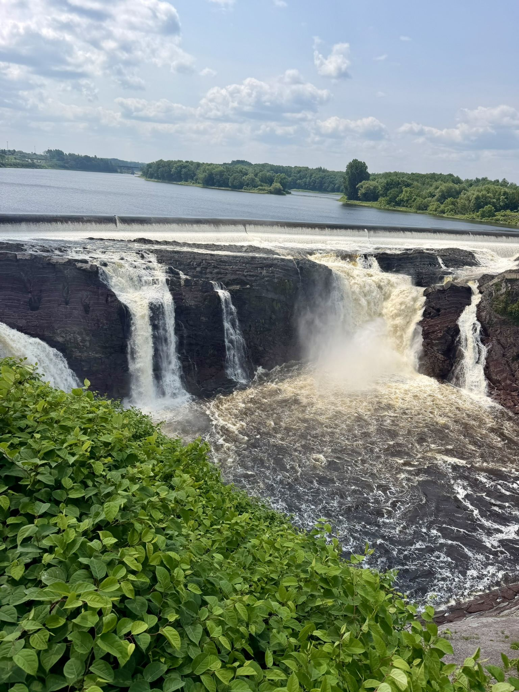
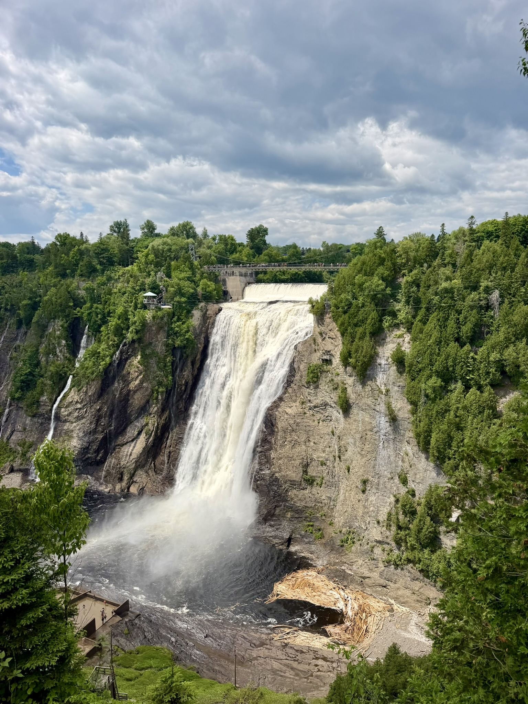
Petit clin d'œil sportif : direction Baie-Saint-Paul pour regarder le match de l'équipe de France contre le Paraguay, dans une ambiance forcément différente d'un bar en France — mais tout aussi chaleureuse.
La nuit, on a dormi dans une auberge de jeunesse à Charlevoix, dans une chambre... de 12 personnes. Une expérience assez troublante quand on n'a jamais fait ça, mais qui fait aussi partie du jeu du voyage à petit budget. Le lendemain matin, petit-déjeuner avec une vue sur le fleuve Saint-Laurent : le fleuve est tellement immense à cet endroit qu'on se croirait au bord de la mer. On a essayé d'apercevoir des baleines depuis la rive — échec de la mission, mais on retentera l'expérience une prochaine fois.
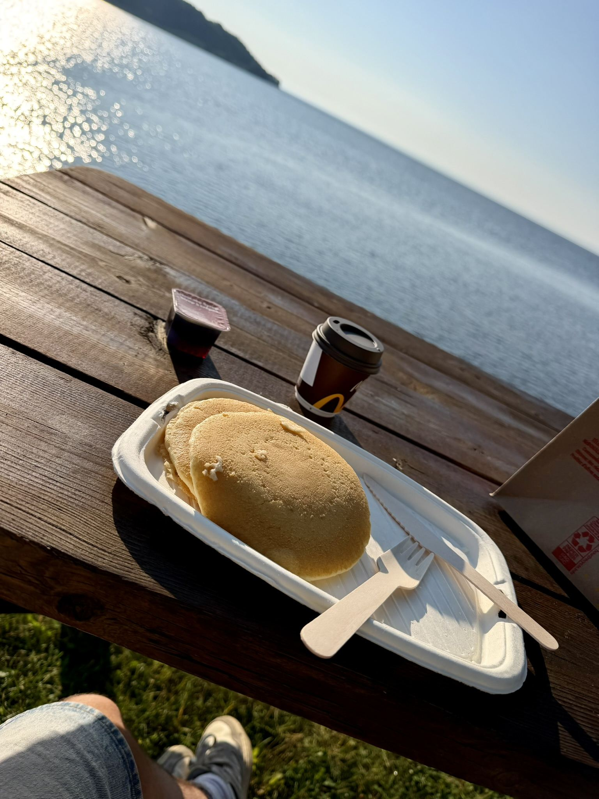
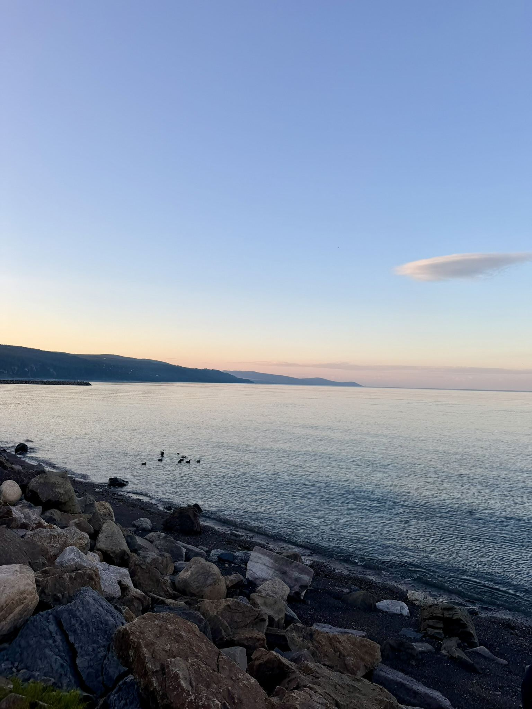
Pour conclure le week-end, direction le parc national de la Jacques-Cartier, un très beau parc à faire en voiture, avant de reprendre la route pour Sherbrooke. La semaine 2 arrive vite — à suivre dans le prochain article.
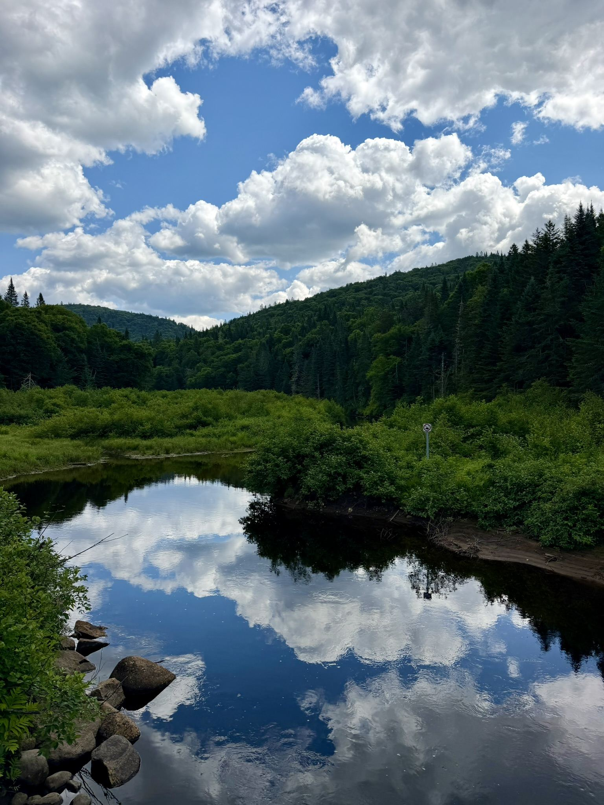
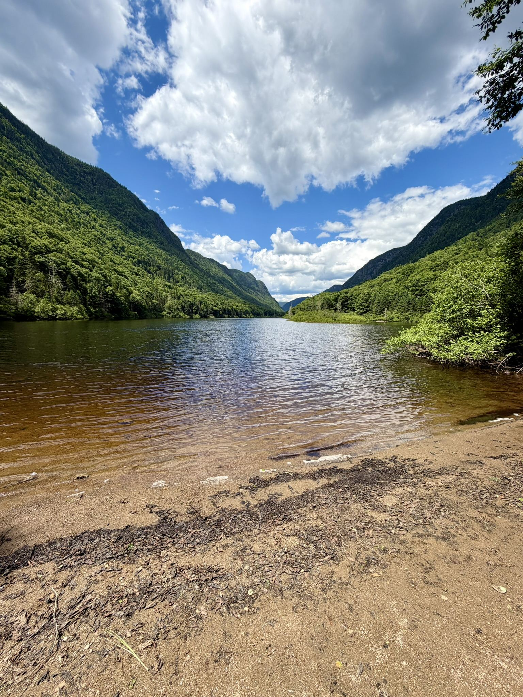